Before / proposed
Left: real screenshots of the unmodified repository (commit 6c9b022) running locally, captured with Playwright/Chromium (emulation — not physical devices). Right: the Phase-1 prototype at the same width. Admin screens could not be screenshotted in their existing form because Google sign-in cannot complete in this environment — marked “Not visually verified”.
Homepage — desktop 1366
Five header bars (233px) → three (≈ 154px); invented hashtags, Live TV and sticky test ad removed; one lead story instead of an auto-rotating slider plus “fast briefs” duplicating the same stories.
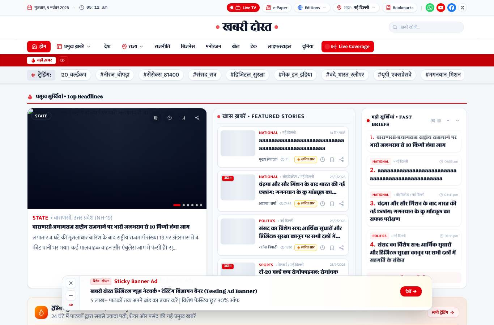
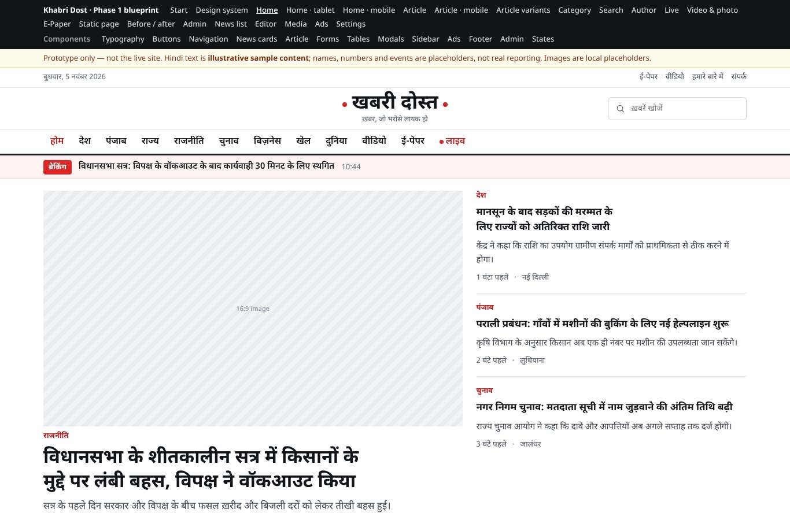
Homepage — phone 375
Header 241px → 96px; news starts above the fold; one fixed bar (bottom nav) instead of bottom nav + sticky ad; no pop-up on first visit.
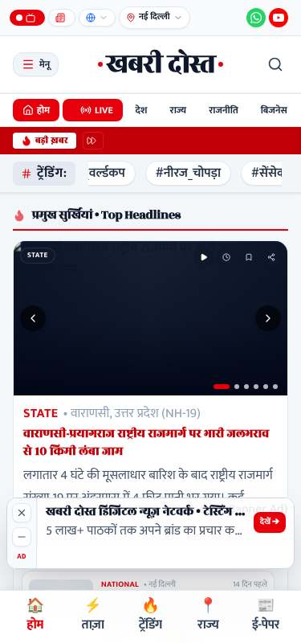
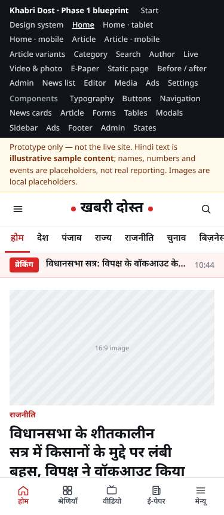
Article — phone 375
Headline in Noto (was Rozha One/Mukta), 26px/1.35; byline with updated time; share bar replaces bottom nav; no test ad over the text.
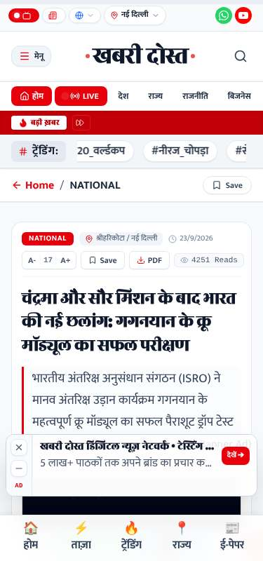
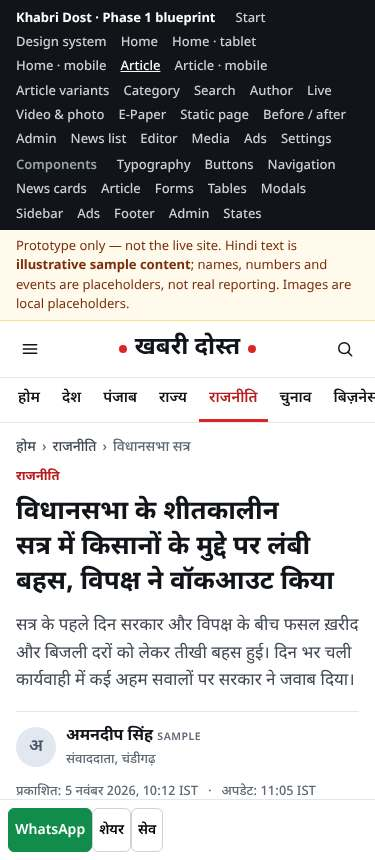
Article — desktop 1366
Readable 680px measure; breadcrumb names the category (not the slug); sidebar = 1 ad + latest + most read (no gold/horoscope/sudoku widgets).
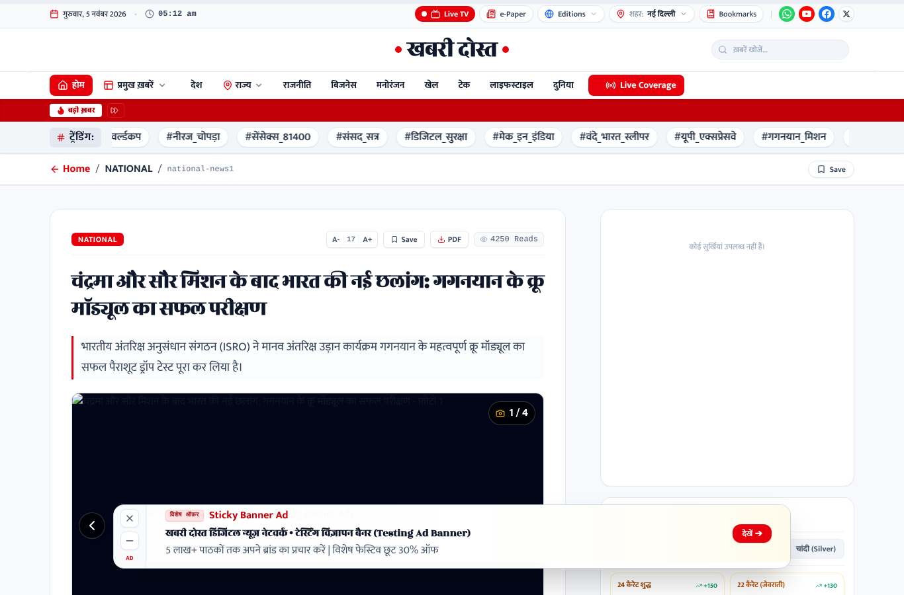
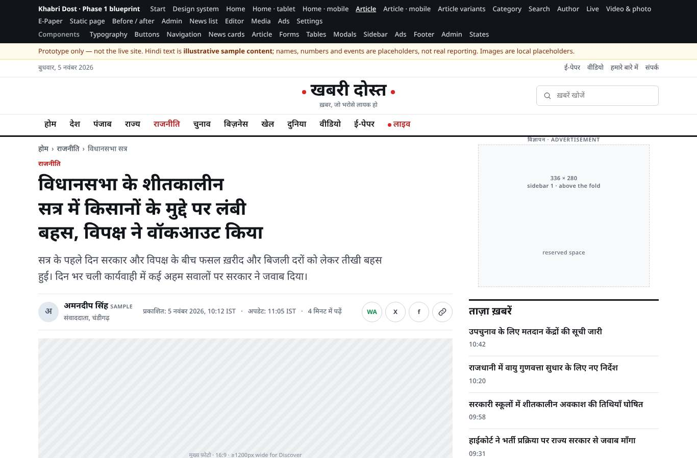
Category — desktop 1366
Real category page with description, lead, list and crawlable pagination (today the homepage layout is reused with a filter).
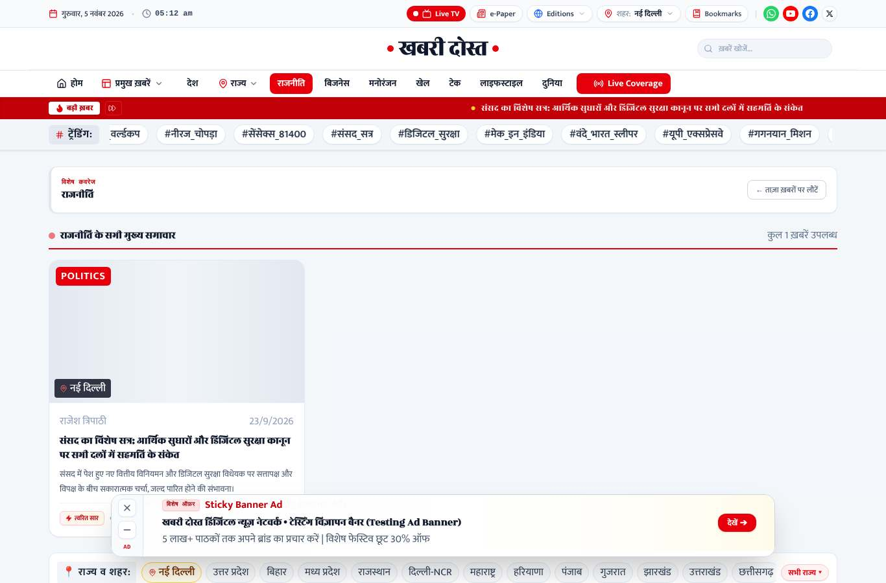
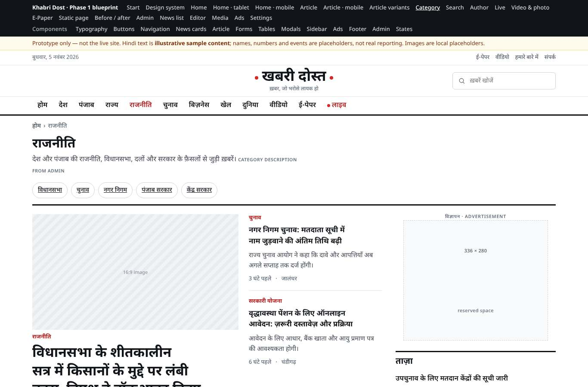
Live — phone 375
Timeline with timestamps and key updates; no fake “viewers” counter (today starts at 14,820 and changes randomly).
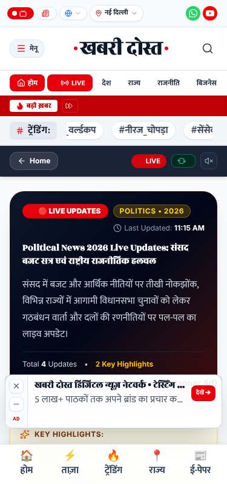
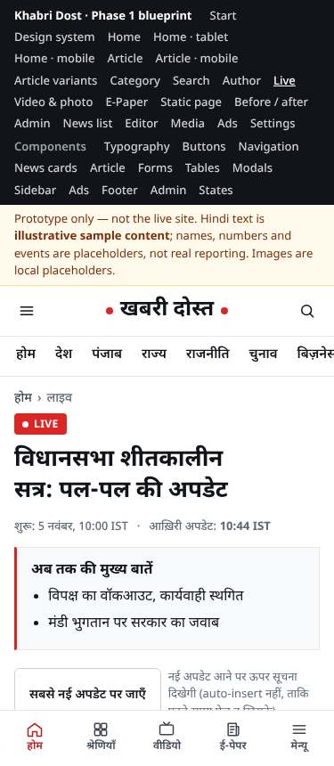
Admin
Existing: not visually verified (requires Google sign-in). Proposed: dashboard, editor.